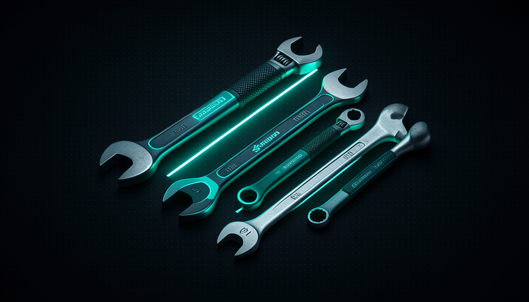

📖 Glossário vivo (leia antes — volte sempre que precisar)
A Trilha 1 já definiu o vocabulário base (modelo, prompt, agente, skill, harness). Aqui na Trilha 5, "Soluções", definimos os termos NOVOS que aparecem no reset:
🧹 Por que resetar
🧠 Imagine assim: seu carro tem 40 acessórios pendurados — GPS antigo, três suportes de celular, adesivos, tapetes empilhados. Você nem usa metade. O carro fica mais pesado e você esquece o que cada coisa faz. A solução não é "comprar um acessório melhor": é esvaziar o carro e só recolocar o que você usa de verdade.
No fechamento da conversa, Matt Pocock dá um conselho que parece contra-intuitivo para quem está acostumado a acumular ferramentas: "everyone bloats up their context window with too much stuff." Quase todo mundo entope o context window com coisa demais — dezenas de skills, plugins, MCP servers e arquivos de instrução que ele nunca abre. O resultado é context bloat: o agente fica mais lento, mais caro e, ironicamente, menos esperto, porque parte da atenção dele se perde administrando o que você empilhou.
O porquê é direto: cada skill carrega uma descrição que ocupa espaço no contexto, mesmo quando você não a usa naquela tarefa (você viu isso no módulo 3.2, "Custo de contexto da skill"). Some dezenas delas e a IA começa cada conversa já carregada de ruído. O reset de 2 passos resolve isso na raiz: em vez de tentar afinar uma bagunça que cresceu sem intenção, você volta ao zero e reconstrói com propósito. O erro comum aqui é achar que "mais skills = agente melhor" — é o contrário: skill que você não usa é peso morto que paga aluguel no seu contexto toda vez.
O reset troca um contexto entulhado (vermelho) por um agente puro (teal) — e só então você reconstrói com intenção.
⚠️ Erro comum de iniciante
Tratar skills como troféus ("instalei 50!"). Cada uma que você não usa é peso que entra em toda conversa. O sinal de maturidade não é quantas você tem — é quão poucas e bem escolhidas.
Em 1 frase: todo mundo incha o contexto com coisa demais — resetar ao zero é o caminho mais rápido pra um agente mais esperto.
🗑️ Deletar tudo (passo 1)
🧠 Imagine assim: antes de reorganizar um armário, você tira TUDO pra fora e deixa o armário vazio. Só com ele vazio você enxerga o tamanho real do espaço e decide, peça por peça, o que merece voltar.
O passo 1 é literal e radical. Nas palavras de Pocock: "delete everything — every skill, plugin, MCP server, your CLAUDE.md, agents.md — go back to absolute zero." Apague toda skill, todo plugin, todo MCP server, seu CLAUDE.md e seu AGENTS.md. Volte ao zero absoluto. Não é "desabilitar" nem "limpar um pouco" — é esvaziar. A ideia é só conseguir, depois, ver o agente sem nenhuma das suas camadas em cima.
Antes de rodar, faça backup (o reset é reversível só se você guardou os arquivos). Por isso o copybox abaixo primeiro move tudo pra uma pasta de segurança em vez de apagar de vez — assim você volta ao zero sem perder nada. No Claude Code, as configurações vivem em ~/.claude/ (skills, plugins, o seu CLAUDE.md) e os MCP servers ficam declarados num arquivo de config. Mover essas pastas já deixa o agente em blank slate.
# PASSO 1 — Deletar tudo e voltar ao ZERO absoluto.
# (move pra um backup datado em vez de apagar — reversível)
STAMP=$(date +%Y%m%d-%H%M%S)
BACKUP="$HOME/.claude-backup-$STAMP"
mkdir -p "$BACKUP"
# 1) skills, plugins e o seu CLAUDE.md global
mv ~/.claude/skills "$BACKUP/skills" 2>/dev/null
mv ~/.claude/plugins "$BACKUP/plugins" 2>/dev/null
mv ~/.claude/CLAUDE.md "$BACKUP/CLAUDE.md" 2>/dev/null
# 2) CLAUDE.md / AGENTS.md do projeto atual
mv ./CLAUDE.md "$BACKUP/project-CLAUDE.md" 2>/dev/null
mv ./AGENTS.md "$BACKUP/project-AGENTS.md" 2>/dev/null
# 3) remover TODOS os MCP servers (lista e apaga um a um)
for s in $(claude mcp list 2>/dev/null | awk '{print $1}'); do
claude mcp remove "$s" 2>/dev/null
done
echo "Blank slate pronto. Backup em: $BACKUP"
echo "Agora abra o agente e OBSERVE-o no modo puro."
🔬 Exemplo resolvido: o reset do João
João tinha 28 skills instaladas, 4 MCP servers e um CLAUDE.md de 600 linhas acumulado em meses. O agente estava lento e às vezes "esquecia" o pedido no meio.
- Rodou o script acima → tudo foi pra
~/.claude-backup-20260619-201500. - Abriu o agente: contexto inicial caiu de ~40k tokens de config pra praticamente zero.
- Pediu uma tarefa simples e observou o agente puro resolvendo (próximo tópico).
- Resultado: respostas mais rápidas e diretas — e ele percebeu que só sentia falta de 3 skills, não 28.
Indo mais fundo (opcional): por que mover e não apagar?
Mover (mv para um backup) dá o mesmo efeito de "voltar ao zero" — o agente não enxerga mais nada — mas mantém uma rede de segurança. Se no passo 2 você descobrir que sentia falta de uma skill específica, ela está intacta no backup e você a recoloca em segundos. Apagar de vez (rm -rf) só faz sentido depois que você já reconstruiu e tem certeza de que não quer mais nada do antigo.
Em 1 frase: esvazie de propósito — mova skills, plugins, MCP, CLAUDE.md e agents.md pra um backup e volte ao zero absoluto.
👀 Observar o agente puro
🧠 Imagine assim: antes de dar muletas a alguém, você observa como a pessoa anda sozinha. Talvez ela já ande bem — e a muleta só atrapalhava. Você só descobre depois de assistir sem ajuda.
Com o blank slate pronto, vem a parte que quase todo mundo pula: parar e olhar. Pocock é explícito — depois de deletar, "observe the agent": veja o que o agente faz no modo básico. Dê tarefas reais do seu dia e assista como ele se vira sem nenhuma das suas camadas. O objetivo não é julgar rápido; é descobrir, de forma honesta, do que ele já dá conta sozinho.
Por que isso importa tanto? Porque os modelos de hoje são muito mais capazes do que eram quando você instalou metade das suas skills. Várias delas existem pra "consertar" comportamentos que o modelo atual já acerta sozinho — então elas só estão adicionando ruído. Ao observar o agente puro, você gera uma lista honesta de lacunas: "aqui ele patinou", "aqui ele inventou um padrão que eu não quero", "aqui ele foi perfeito". Essa lista é o que vai guiar o passo 2. O erro comum é resetar e, no susto, recolocar tudo de volta na primeira meia hora — você nunca chega a ver o agente puro e perde o aprendizado inteiro.
Recuperação rápida: qual é o objetivo de observar o agente puro logo após o reset?
Em 1 frase: assista o agente puro trabalhar — ele já faz mais do que você imagina, e o que falta vira sua lista.
🧱 Recamadar com procedures
🧠 Imagine assim: ao reformar o armário vazio, você não joga tudo dentro de novo. Você coloca prateleiras (estrutura) e guarda uma peça de cada vez, perguntando "isso eu uso toda semana?". O que entra, entra com etiqueta e lugar.
O passo 2 é reconstruir — mas com regra. Pocock especifica: ao trazer coisas de volta, prefira procedures, não abilities. Lembre da distinção (módulo 3.1): uma procedure é algo que você chama de propósito (tipo um comando /grill-me); já uma ability é algo que o modelo decide invocar sozinho, e por isso a descrição dela sempre carrega no contexto. Procedures são "sob demanda": pesam só quando você as aciona. É exatamente o oposto do inchaço que motivou o reset.
Pocock acrescenta um detalhe importante: instale de um jeito que você possa customizar e experimentar. Não é só "reinstalar do mesmo lugar" — é trazer cada peça consciente de por que ela existe e poder mexer nela. O porquê: assim você mantém controle sobre o harness (o tema do curso inteiro) em vez de virar refém de um pacote opaco. O erro comum aqui é, na pressa, instalar um plugin gigante que despeja 30 abilities — você acabou de recriar o bloat que tinha apagado. Camada por camada, procedure por procedure.

✓ Recamadar certo
- • Uma camada de cada vez.
- • Preferir procedures (você invoca).
- • Instalar de jeito customizável.
- • Só o que a lacuna provou faltar.
✗ Recamadar errado
- • Despejar um plugin gigante.
- • Encher de abilities "por garantia".
- • Reinstalar tudo do backup de uma vez.
- • Não saber por que cada peça está lá.
Em 1 frase: reconstrua com procedures (que você invoca) e de jeito customizável — uma camada por vez, nunca um plugin gigante.
🎯 Trazer só o que falta
🧠 Imagine assim: de volta da viagem, você desfaz a mala só conforme vai precisando. No 3º dia você ainda não pegou o casaco — então talvez nem precisasse dele. Você traz de volta só o que a vida real cobrou.
Esta é a regra de ouro do passo 2: traga de volta só o que você sentir falta. Pocock dá um exemplo concreto — você pode redescobrir que quer a skill de brainstorming do superpowers, então instala essa, e só ela. Nada de "vou recolocar tudo porque um dia pode ser útil". Se uma lacuna apareceu de verdade quando você observava o agente puro (tópico 3), ela merece uma peça nova; se não apareceu, não merece.
Na prática, você instala cada skill que faz falta com o comando do repositório de skills (o do Matt, por exemplo). O fluxo completo de Pocock conecta com o resto da trilha: depois de reconstruir um harness enxuto, você "acha problemas → acha soluções → delega a implementação a um agente AFK" — e ele resume o AFK assim: "AFK is just incredible — takes a bit of setup, but then it goes crazy." Ou seja: o reset não é um fim em si; é o que deixa seu harness limpo o bastante pra você operar em alto nível. Copie o passo 2 abaixo:
# PASSO 2 — Recamadar: trazer de volta SÓ o que você sentiu falta. # Regra: uma de cada vez, preferindo procedures, instaladas de # um jeito que você possa CUSTOMIZAR/experimentar. # Você observou o agente puro e sentiu falta de "brainstorming"? # Então traga SÓ ela (não o pacote inteiro): npx skills latest add brainstorming # Sentiu falta de mais uma? Adicione conforme a lacuna aparecer: npx skills latest add grill-me # npx skills latest add <outra-skill-que-fez-falta> # Confira o que está instalado agora (deve ser uma lista curta): ls ~/.claude/skills # DICA: prefira instalar como PROCEDURE (você invoca, ex.: /grill-me) # em vez de ability (o modelo invoca sozinho e a descrição pesa sempre). # E NÃO reinstale o backup inteiro — ele continua em ~/.claude-backup-* # só como rede de segurança.
Em 1 frase: instale de volta só o que a observação provou que faz falta — uma skill por vez, via npx skills latest add.
🧪 Customizar pra experimentar
🧠 Imagine assim: uma receita que você baixou não é lei — é ponto de partida. Você prova, ajusta o sal, troca um ingrediente. A receita vira sua. Skills são iguais: instale, mas mexa até virar do seu jeito.
A última peça do conselho é a que mais gente esquece: instale as skills de um jeito customizável, pra poder experimentar. Pocock frisa isso de propósito — uma skill de fora é um bom começo, não a palavra final. Quando você instala via npx skills latest add, o arquivo da skill fica na sua máquina, em ~/.claude/skills/, e você pode abrir e editar: ajustar o tom, cortar o que não serve pro seu projeto, adaptar ao seu fluxo. É assim que o harness vira seu em vez de uma cópia genérica. Mantenha o ciclo: instalou → usou → não serviu? remove; serviu mas faltou algo? edita. O erro comum é tratar skill instalada como intocável e voltar a acumular — o reset só funciona se você seguir podando. Copie o checklist abaixo e cole no topo do seu próximo reset:
RESET DE 2 PASSOS — checklist (o conselho final do Pocock) PASSO 1 — DELETAR TUDO (blank slate): [ ] backup das skills, plugins, MCP, CLAUDE.md e AGENTS.md [ ] volte ao ZERO absoluto (mova tudo pra fora) [ ] abra o agente e OBSERVE-o no modo puro com tarefas reais [ ] anote as LACUNAS de verdade (não as imaginárias) PASSO 2 — RECAMADAR COM INTENÇÃO: [ ] traga de volta SÓ o que sentiu falta [ ] prefira PROCEDURES (você invoca) a abilities (o modelo invoca) [ ] instale de jeito CUSTOMIZÁVEL: npx skills latest add <skill> [ ] abra a skill e ADAPTE ao seu projeto/estilo [ ] uma camada por vez — nunca um plugin gigante DEPOIS: ache problema -> ache solução -> delegue a um agente AFK.
Recuperação rápida: ao recamadar no passo 2, o que Pocock recomenda priorizar?
Em 1 frase: skill instalada é ponto de partida — abra, adapte e mantenha podando; o reset é um hábito, não um evento único.
🧾 Resumo do Módulo
Próximo módulo:
5.2 — grill-me + 10 decisões: a skill que entrevista você e alinha tudo antes de codar.